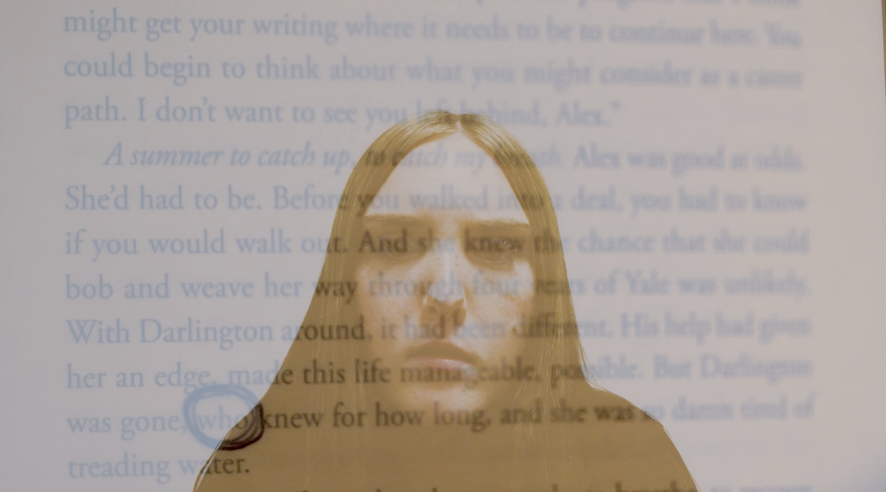

Maia Lonergan
Maia Lonergan’s work is predominantly montage focused including lots of repetition and colour manipulation. Maia is interested in exploring people's sense of self and the ranges of human feelings. Her work features many visuals of nature and includes subtle themes of fragility, which she sometimes does using juxtapositions in her work. She has a strong connection to nature and uses many visuals to demonstrate the fragility of not only life but people themselves. Women are a predominant subject focus in her pieces, and she likes to portray them with experiencing elements of the mental state and self-discovery. Maia has struggled with finding out who she is and where she belongs with is the reason behind the themes in her work. In her final piece of work ’Who’ her aim is to demonstrate the confusion and fear that people can go through trying to find themselves and how this is often an endless cycle that never ends. The main theme for this piece is self-discovery and the endless search of figuring out who you are. Lots of repetition is used in this piece showing this cycle in a literal sense as well as it being metaphorical. This piece also included themes of fragility and an altered state of reality through her use of colour and editing techniques. Maia wants people to be able to connect with her pieces and see elements of themselves in them and be able to reflect on themselves after experiencing her work. Maia Lonergan’s work is influenced by people like Maya Deren and Bill Viola which has inspired her surrealist techniques and experimental exploration. Her style has developed throughout her work, and she enjoys using repetition and colour manipulation to immerse the audience in her work and getting them to connect with the themes she shows.

 @rollthetapess
@rollthetapess
 @roll.the.tapes26
@roll.the.tapes26